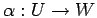
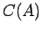
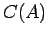
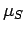
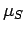

Let  be another noetherian integral domain together with a
homomorphism
of rings. We will consider
be another noetherian integral domain together with a
homomorphism
of rings. We will consider  as an -algebra via this homomorphism. In this situation there
is a functor from the category of -modules into the category of
as an -algebra via this homomorphism. In this situation there
is a functor from the category of -modules into the category of
 -modules given by
-modules given by
to each pair of -modules and and an -homomorphism . We will study the behaviour of the construction of centralizer coalgebras under these functors. It will turn out that the centralizer coalgebra behaves better than the centralizer algebra. To start with let
where is given by for all . Let be the natural embedding of the subalgebra and let
denote the image of in . Further there are natural homomorphisms
on generators given in a similar way to . Note, that both, and are homomorphisms of algebras connected by the equation
Thus is injective
if and only if
is injective ( stands for the
corresponding embeddings). This may fail if 
is not a pure -submodule in . Further may fail to
be surjective (see the example following theorem 4.3).
is called stable under base change if is an
isomorphism of for all choices for
stands for the
corresponding embeddings). This may fail if 
is not a pure -submodule in . Further may fail to
be surjective (see the example following theorem 4.3).
is called stable under base change if is an
isomorphism of for all choices for  . Now, in
analogy to we are going to consider natural homomorphisms
. Now, in
analogy to we are going to consider natural homomorphisms
We will show that they are isomorphisms independent of the choices for and  .
To this claim we consider
.
To this claim we consider
where
 is the natural
homomorphism given by
on genorators with
. It is easy to check
that is a homomorphism of coalgebras
if the coalgebra structure on
is defined in a canonical
way (for details see [Oe] section 1.5). Further, the verification
of the commutativity rule
is the natural
homomorphism given by
on genorators with
. It is easy to check
that is a homomorphism of coalgebras
if the coalgebra structure on
is defined in a canonical
way (for details see [Oe] section 1.5). Further, the verification
of the commutativity rule
is straightforward, as well. Here
is the isomorphism induced by the
matrix trace map
 . Setting
. Setting
we obtain
since is an isomorphism of  -algebras. By
definition we have
and
.
Using (6) this yields
-algebras. By
definition we have
and
.
Using (6) this yields
Here again, we have used the symbol  to indicate embeddings
of -submodules. Note that in particular
to indicate embeddings
of -submodules. Note that in particular
 is
a coideal in
since is an isomorphism of
coalgebras and therefore
is a coalgebra.
Finally, we are able to define the natural homomorphism 
as the factorization of
which exists by (7).
We immediately obtain
is
a coideal in
since is an isomorphism of
coalgebras and therefore
is a coalgebra.
Finally, we are able to define the natural homomorphism 
as the factorization of
which exists by (7).
We immediately obtain
This means that  is stable under base changes for all choices of and .
If the -algebra
is stable under base changes for all choices of and .
If the -algebra  is a field, it follows from theorems
3.3 and 4.1 that
is a field, it follows from theorems
3.3 and 4.1 that
Now, for a noetherian integral domain
it is known from commutative algebra that an -module is
projective if and only if the dimension of is independent
of the field  . Thus we obtain
. Thus we obtain
PROOF: First assume (a). Then the sequence
Since
induces an isomorphism between
and
according to lemma 3.1 it follows
that is projective, as well. Thus
is a direct summand in
proving (c).
Part (a) follows from (c) by theorem 3.7, since the
dual of a projective module is projective again.
To verify (b) we therefore may assume both (a) and (c). Since
is a direct summand
is injective for all -algebras
 . Consequentely all
are injective (see above). To show surjectivity note that the image
of in
must be a direct summand therein, since
is an isomorphism and
a direct summand in
.
Therefore, to show that this submodule of
coincides with , it is enough to verify that both
have the same rank (the dimension of the -tensored module
over the field of fractions on
. Consequentely all
are injective (see above). To show surjectivity note that the image
of in
must be a direct summand therein, since
is an isomorphism and
a direct summand in
.
Therefore, to show that this submodule of
coincides with , it is enough to verify that both
have the same rank (the dimension of the -tensored module
over the field of fractions on  ). But these ranks must indeed be
the same as can be seen from the following calculations
). But these ranks must indeed be
the same as can be seen from the following calculations
where the left-hand-side equation holds by projectivity of , the right-hand-side one
by corollary 4.2 and the one in the middle
since
is an isomorphism by flatness of the field  of fractions on .
This establishes (b).
of fractions on .
This establishes (b).
Now assume (b). This implies that the map
induced by
the embedding is injective for all  . By
commutative algebra arguments one concludes that is a direct
summand in the -free module , in particular it is
projective. Now, let
. By
commutative algebra arguments one concludes that is a direct
summand in the -free module , in particular it is
projective. Now, let  be a field.
Since is an isomorphism we have
be a field.
Since is an isomorphism we have
The left-hand-side is independent of  by projectivity of . Thus by corollary 4.2
by projectivity of . Thus by corollary 4.2  is projective yielding
(a).
is projective yielding
(a).
Example: Let
and
. Further let